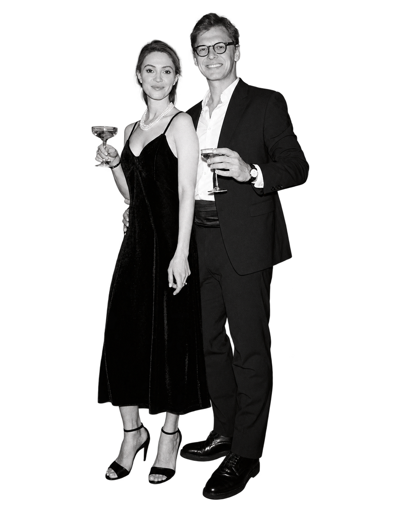
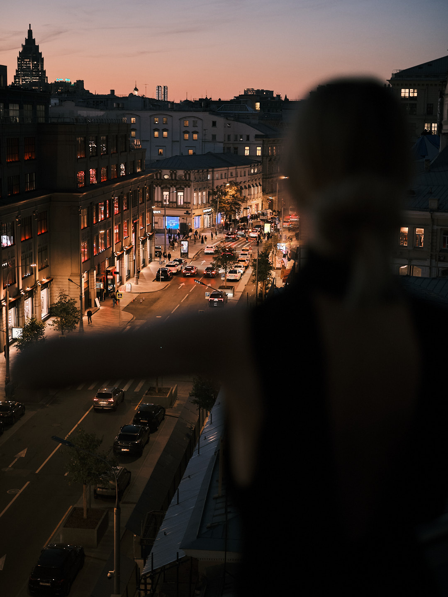

В кадре
и за кадром —
только мы двое.
Мы — Екатерина и Андрей Ефимовы. Сами придумываем, снимаем и собираем истории для отелей, ресторанов и мест, в которые хочется возвращаться.

Нам интересно, как живёт ваше место.
Прежде чем доставать камеру, мы смотрим: как сюда входят, где задерживаются, что замечают, каким получается утро и какой вечер. Так в кадре появляется не абстрактная «красота», а характер именно вашего бренда.
Работать вместе просто
Говорим
Вы рассказываете, что меняется в бренде, кому нужны материалы и где они будут жить.
Придумываем
Находим визуальную интонацию, сцены и форматы. Согласуем план, чтобы на площадке не было лишней суеты.
Снимаем
Держим в кадре и атмосферу, и практические задачи. Подстраиваемся под ритм пространства.
Собираем
Отбираем и готовим материалы в согласованных форматах, чтобы ими было удобно пользоваться.

Мы не просим место становиться декорацией.
Нам важна его настоящая жизнь. Именно она делает фото и видео убедительными.
Посмотреть работы